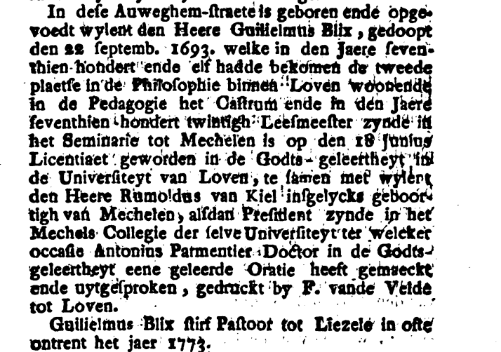
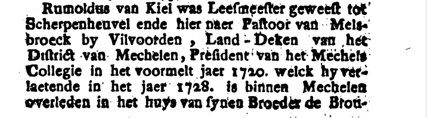
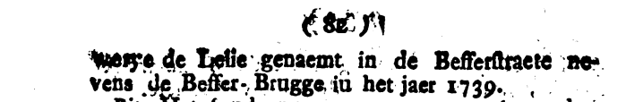

Van dorpspastoor tot universiteitsrector
Een fragment uit het leven van Rombout Van Kiel (1685-1739)
Deze tekst is nog in opbouw.
Inleiding
Serendipiteit, je zoekt iets en je vindt … iets anders. Maar ook interessant.
Het begon met een boekrecensie door Johan van de Wiele (1) waarin we het volgende lazen:
Rombout van Kiel, deken van Leuven, was afkomstig uit een welgestelde Mechelse brouwersfamilie. Zowel zijn vader als zijn broer Maarten bekleedden een schepenambt te Mechelen. Rombout was onder andere pastoor van Melsbroek, rector van de Leuvense universiteit, kanunnik van het Sint-Pieterskapittel te Leuven en deken van het landdecanaat Leuven.
Pastoor van Melsbroek en rector van de Leuvense universiteit …
Jean-Frédéric Staes (2) heeft eveneens een recensie over datzelfde boek geschreven. We citeren en vinden wat extra informatie:
M. Cloet a choisi le rapport de tournée de Rombout Van Kiel, doyen de Louvain de 1732 à sa mort en 1739. Ancien curé de Melsbroek, président du collège de Malines, chanoine de Saint-Pierre et surtout recteur de l’Université de Louvain en 1727-28 lors du dénouement de l’affaire Van Espen, le visiteur était un ecclésiastique eminent. Le soin extrême avec lequel il s’acquitta de sa tâche en témoigne; son rapport compte parmi les meilleurs du XVIIIe siècle.
Het betreft, logischerwijze, in beide gevallen een recensie over hetzelfde boek, namelijk Het decanaat Leuven in 1732-1734. Visitatieverslag van deken Rombout Van Kiel (3) van de hand van Michel Cloet.
Het boek zelf leggen we (voorlopig?) terzijde. Het betreft een visitatieverslag van het decanaat Leuven. En in deze uitgave werd het visitatieverslag gepubliceerd in de originele Latijnse versie. Onze aandacht gaat eerder naar Melsbroek, zodat het boek grotendeels buiten de focus van deze tekst valt.
We volgen Rombout Van Kiel doorheen zijn leven.
Mechelen
Scherpenheuvel
Melsbroek
Wanneer de geschiedenis van Melsbroek ter sprake komt, vallen we in de eerste instantie terug op het standaardwerk van Jos Lauwers. Daarin vinden we inderdaad Rombout (of Rumoldus) Van Kiel terug als dorpspastoor, beginnend bij het overlijden van Glaudius Laurentius van Grasdorf in 1713 (4, pag 262).
Voetnoten of referenties in de oorspronkelijke tekst van de citaten worden hier tussen vierkante haken weergegeven. Voor een vlotte lezing lopen de nummers van beiden wel door.
Na zijn overlijden werd Pieter Vandersanden gedurende één jaar als deservitor aangesteld, tot bij de benoeming in 1714 van Rumoldus van Kiel, in concursu praepositus [5]. Het Kapittel van St.-Gudula te Brussel koos inderdaad de Mechelaar Rumoldus van Kiel uit als nieuwe dorpsherder, tussen drie kandidaten (pretendit sibi tres in vim concursus nominandos) [5]. In 1715 noteerde de deken: er is een kapelanie van St.-Martinus aan het pastoraat gehecht, op last van 5 missen om de 14 dagen, beschikkende over bijzonder, goede landerijen, waarvan de opbrengst volstaat voor de eraan verbonden lasten. De pastoor bediende zich van het Romeinse officie en droeg in de Winter op zon- en feestdagen de eerste mis op om 7 u., de hoogmis om 10 u.; bij Zomertijd was de eerste mis om 6 u. en de hoogmis om 10 u., waarmee normaal preek of catechese gepaard ging [6]. Onder zijn herderschap werd de in 1627 opgerichte Broederschap van het H. Kruis in 1717 opnieuw georganiseerd, dank zij medehulp van kasteelvrouwe Gisberte de Locquenghien, bij gelegenheid van de ontvangst van de bulle van paus Clemens XI, die rechtstreeks aan de parochie Melsbroek werd toegestuurd. Vanaf 1717 hield hij de registers bij van dopen, huwelijken en overlijdens Vanaf 1720 werd hij kanunnik benoemd van de Collegiale van S.Pieters te Leuven en eredeken van het distrikt Leuven, waar hij trouwens overleed op 11.9.1739.
Zijn opvolger werd Cornelius de Mesmaeker, die op 2 juli 1720 werd aangesteld, maar nog datzelfde jaar op 6 oktober overleed [5]. Nu krijgen we weer een pastoor te Melsbroek, die als voorname persoonlijkheid de geschiedenis zou ingaan. Het was Walter Pluymers uit Wommersom, die in 1721 werd aangesteld, via concursu. Onder zijn herderschap stichtte dorpsvrouwe Gisberte de Locquenghien het Cantuarium van het H. Kruis, waarvoor zij reeds in 1717-20 een kapelaanshuis naast de kerk had doen bouwen.
Hierbij echter geen vermelding van enige rol als universiteitsrector. Het is eerder één van de opvolgers, Walter Pluymers, die door Jos Lauwers een voorname persoonlijkheid toegeschreven krijgt.
Is dit de reden waarom Michel Cloet in een voetnoot verwijst naar Jos Lauwers voor een recente geschiedenis van Melsbroek, maar de informatie over Van Kiel hierin onnauwkeurig noemt? Dit echter zonder nadere verklaring of correctie. Of slaat het op de latere benoemingen in Leuven? Uiteraard staat, in tegenstelling tot het werk van Michel Cloet, Melsbroek en niet het werk en de loopbaan van Rombout Van Kiel, centraal bij Jos Lauwers.
Leuven
Mechelen
We komen Rombout Van Kiel ook nog tegen op het einde van zijn leven.
In een boek, Historische saemenspraeke over de stadt van Mechelen, tusschen Pipinus ende Ludolphus de selve stadt doorwandelende uit (waarschijnlijk) 1775 (7) lezen we dat Rombout Van Kiel op 18 juni 1720 licentiaat in de godsgeleerdheid geworden is, samen met Guilielmus Blix, een andere Mechelaar aan de Universiteyt van Loven. Rombout Van Kiel was op dat moment president van het Mechels College in Leuven.
We vinden hier de bevestiging dat Romout Van Kiel leesmeester geweest is in Scherpenheuvel en daarna pastoor van Melsbroek bij Vilvoorde, landdeken van hetdistrict Mechelen, president van het Mechels college. In 1728 verlaat hij dit Mechels college. Er wordt hier geen reden en geen olgende stap gegeven.
Merk op dat volgens deze bron (uit 1775) Romuldus Van Kiel in 1739 niet in Leuven overleden is, maar wel binnen Mechelen, namelijk in het huis van zijn broer, de brouwerij de Lelie in de Befferstraat naast de Befferbrug.



Het is in ieder geval (zie Figuur 2) zo dat Rombout Van Kiel met het nodige eerbetoon in Mechelen begraven werd op 13 september 1739.